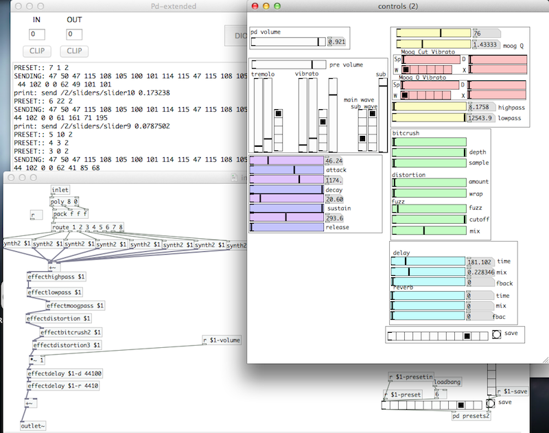
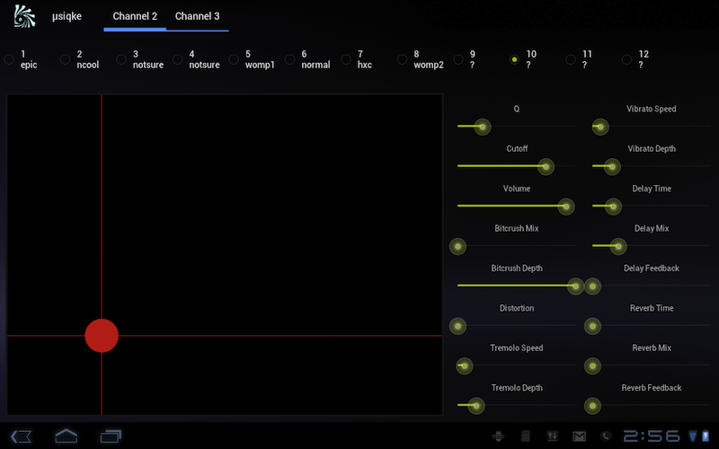

This is the main instrument I (rj marsan) use for my band, Shy Guy Says. It's typically used with an android tablet app and a midi keyboard. it sounds pretty cool.

How it works:
I have two instruments on midi channels 2 and 3 (no idea why, I guess I always had stuff on channel 1, so it stuck). They share presets, and if you want you can always just remove one. They're each 8-note polyphonic. Synthesis is mainly mixing two oscillators and octave apart, with various waveforms. It has tremolo, vibrato, a full envelope (way more than ADSR), hp, lp, and a moog filter, as well as moog filter vibrato. a bitcrusher, distortion, and fuzz are added, but I still don't think any of them sound that great. Delay and reverb are there, although I don't think I ever use them.
How it sounds
Seriously, I use this in every one of my songs, so just check out my band's new album to hear it in action. If people bug me, I can put some sound samples up, but I honestly believe you can make it sound better than I can. 
Tablet Setup
To get the companion android tablet set up, make sure they're both on the same network (and make sure the network is Fast). Lots of times you can just set up your laptop in ad-hoc mode. The android app is set to listen on 9000 and broadcast on 8000. For whatever reason, I have a terrible time sending OSC messages back to the tablet unless I hard-code the ip address, but your milage may vary. Inside the __main.pd, there's a subpatch 'pd osc' that has the ip to send it to.
Downloads
I have no interest in packaging this into a super-easy-to-use™ package. So go check it out from github here: https://github.com/rjmarsan/Musiqke-pd-and-android-instrument
Requirements:
- PD-Extended: I try to keep it as vanilla as possible, but it uses mrpeach's OSC library, as well as the fantastic moog~ filter. If you can get those extensions, it should work just fine with vanilla pd.
- Keyboard/OSCKeyboard sketch: It uses MIDI to operate, but I put in a hook to allow it to run over OSC. You can use the processing sketch (and thus would need processing I have to act as a keyboard for it.
- Android Tablet (optional), >= Android 3.0, 10 inches or up: The best part of this instrument (In my opinion) is the companion android app for it. It just sends OSC, but it makes performing live a synch, with awesome preset switching and a kaoss-pad style xy-grid. That being said, it DOESN'T do everything, and is really only meant for performances. Again, totally optional.
for what it's worth, this code is totally BSD licensed. I'm sure there's lots of bugs. email me/message me if you find them.